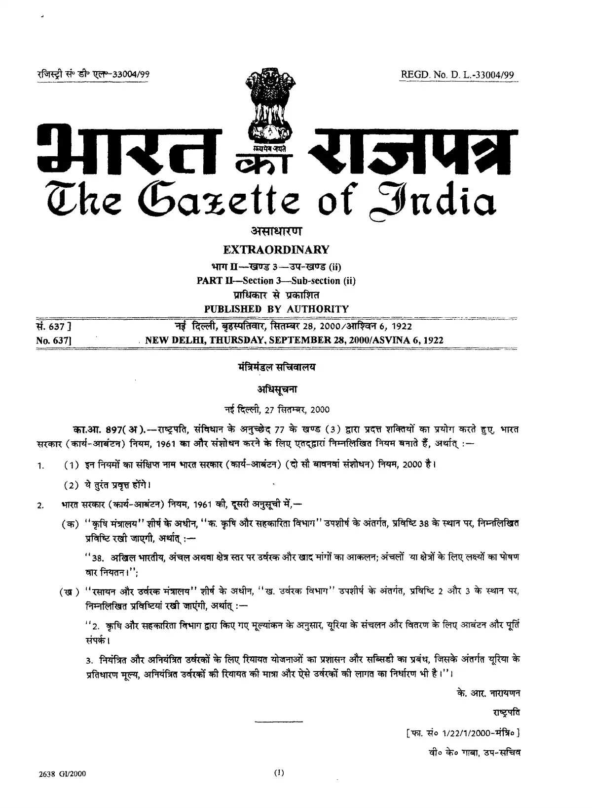
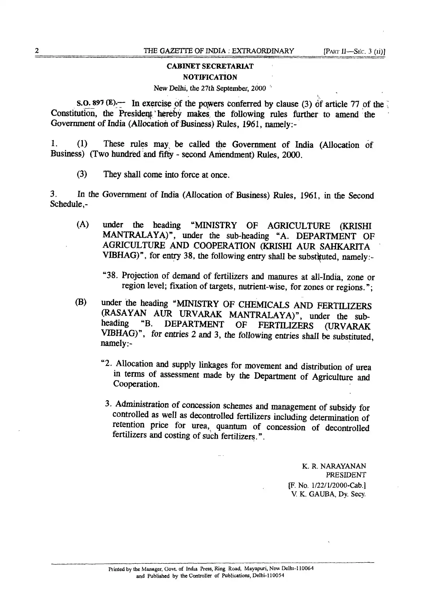

Amendment #252 (S.O. 897(E), 2000)
2 changes: 0 to the First Schedule, 2 to the Second Schedule. 2 applied
The order, page by page
Page 1 of 2

Page 2 of 2

12Schedule 2 › MINISTRY OF AGRICULTURE › DEPARTMENT OF AGRICULTURE AND COOPERATION › entry 38
- 38. Projection of demand of fertilizers and manures at all-India, zone or region level; fixation of targets, nutrient-wise, for zones or regions.
applied at schedule 2 › ministry MINISTRY OF AGRICULTURE › department A › part IV › entry 38 in the Rules after #252
Schedule 2 › MINISTRY OF CHEMICALS AND FERTILIZERS › DEPARTMENT OF FERTILIZERS › entry 2; Schedule 2 › MINISTRY OF CHEMICALS AND FERTILIZERS › DEPARTMENT OF FERTILIZERS › entry 3
- 2. Allocation and supply linkages for movement and distribution of urea in terms of assessment made by the Department of Agriculture and Cooperation.
- 3. Administration of concession schemes and management of subsidy for controlled as well as decontrolled fertilizers including determination of retention price for urea, quantum of concession of decontrolled fertilizers and costing of such fertilizers.
applied at schedule 2 › ministry Ministry of Chemicals and Fertilizers › department B › entry 2 in the Rules after #252
How this document was read
From the Government of India (Allocation of Business) Rules, 1961 and their amendments, as published by the Cabinet Secretariat (cabsec.gov.in), read by orgpedia. The readings of the older scanned gazettes have known gaps.